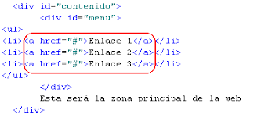

1. HTML
HTML (Hypertext Markup Language) es un lenguaje de marcado que se utiliza para estructurar y mostrar páginas web. Es el componente básico de la web y el lenguaje estándar para crear y diseñar sitios web.

2. Python
Python es un lenguaje de programación de alto nivel, interpretado y de código abierto, conocido por su sintaxis clara y legible, que se asemeja al lenguaje natural, lo que facilita su aprendizaje y uso.

4. enlaces
para crear enlaces utilizamos la etiqueta <a>
enlaces con texto
enlace contenido pythonenlaces con imagen
4. Enlaces
Para crear enlaces a otras páginas se usa la etiqueta <a>:
<a href="https://www.python.org">Visitar Python</a>

5. Listas
Ejemplo de una lista con temas de Python:
- Variables y Tipos de Datos
- Estructuras de Control
- Funciones
- Clases y Objetos

6. Tablas
Ejemplo de una tabla con funciones matemáticas en Python:
| Función | Descripción |
|---|---|
abs(x) |
Valor absoluto de x |
pow(x, y) |
x elevado a la potencia y |
round(x) |
Redondea x al entero más cercano |
7. Formularios
Los formularios permiten la interacción con el usuario:

8. Imágenes y Multimedia
Se pueden agregar imágenes y videos a las páginas web.